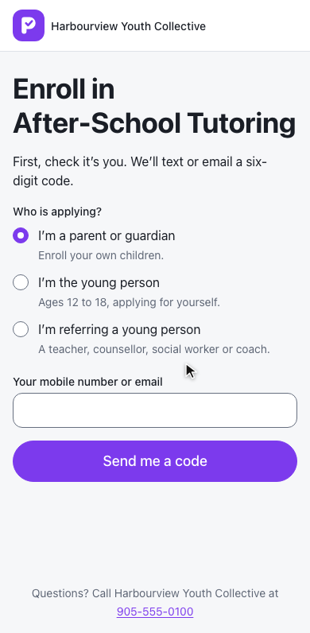
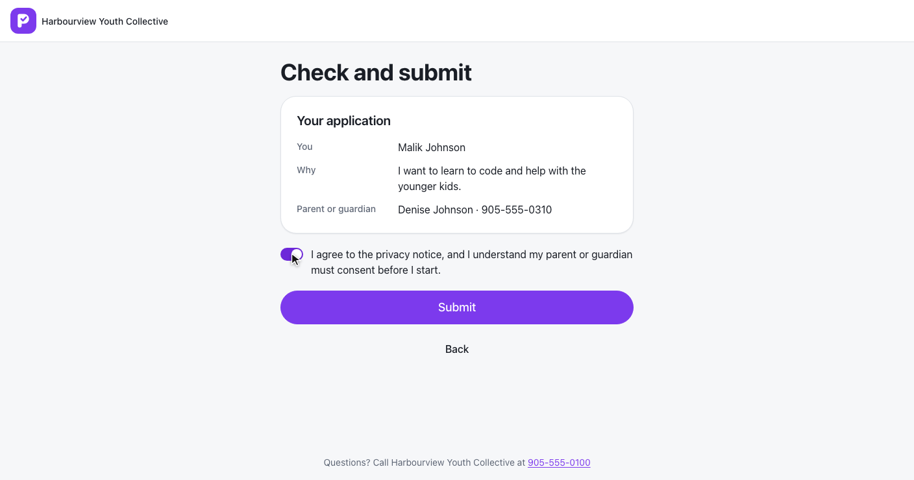
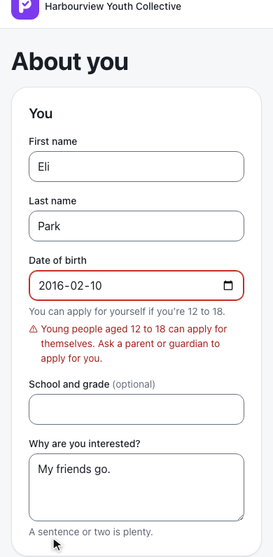
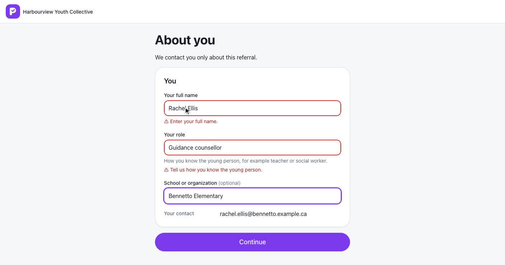
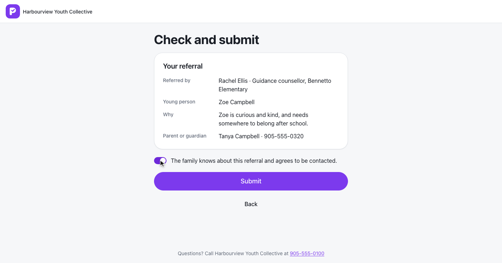
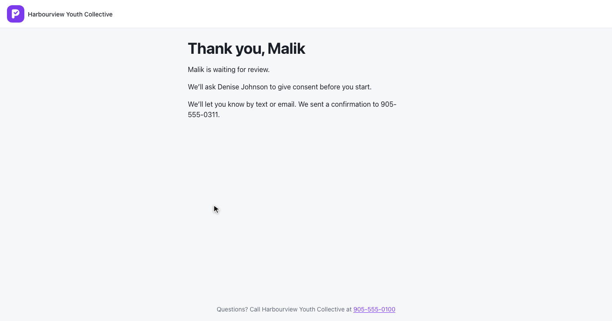
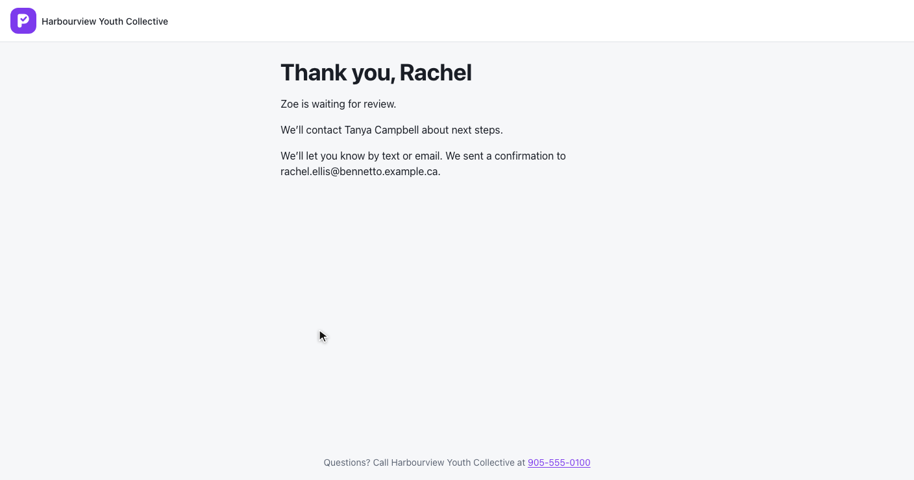
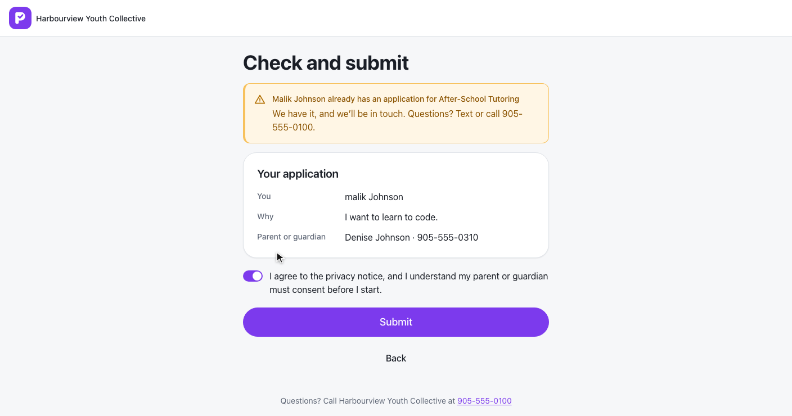
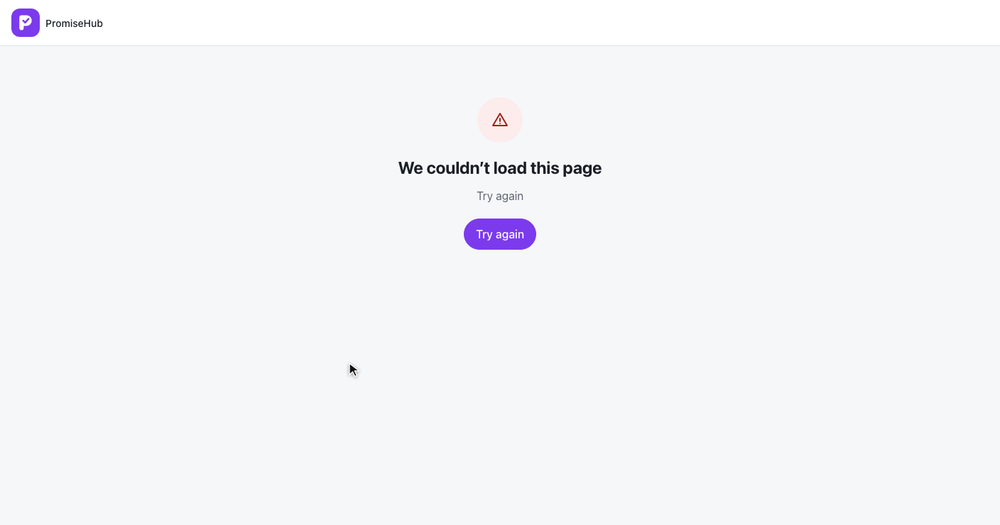
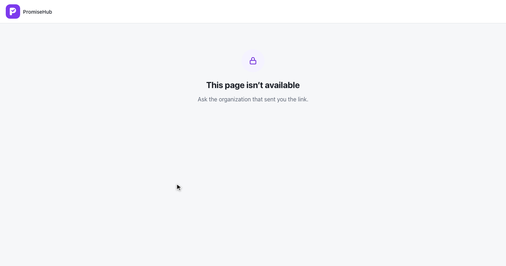

PromiseHub · Video 58
Apply or refer a youth
One enrollment link for guardians, young people and the people who refer them
One enrollment link for guardians, young people and the people who refer them


ph-radio-group with hints · guardian by default · every path verifies a code first (L2-026)
About you, his parent or guardian, the privacy agreement, then POST /g/enroll/{slug}/submit.


Under 18: privacy notice, guardian consents later · 18: season consent · outside 12 to 18: 422 on the date of birth
Her name, role and organization with the verified email, the young person and why, the guardian, and the family's agreement.


On EnrollmentRequest | Guardian | Young person | Referrer |
|---|---|---|---|
AppliedAs | Guardian | Youth | Referrer |
SeasonConsent | Yes | Only at 18 | No |
Reason | — | Why interested | Why referring |
| Household | Returning or new | Always new | Always new |
Referrer name, role, organization and verified contact · audited as Created on Enrollment · ADR 0052


409 duplicate, 429 too-many, Try again, and Roster off.


409 duplicate with the name · 429 too-many after three codes in 15 minutes · nothing recorded or sent
ApplicationTests.cs: paths, rules, consent, tenancy, Roster off, acknowledgement, duplicates, codesEnrollmentTests.cs keeps the guardian pathe2e/tests/enrollment/apply.spec.ts, e2e/tests/guardian/enroll.spec.ts
Who is applying, and the age rule at 390 pixels, no sideways scrolling.
Next: review and place applicants